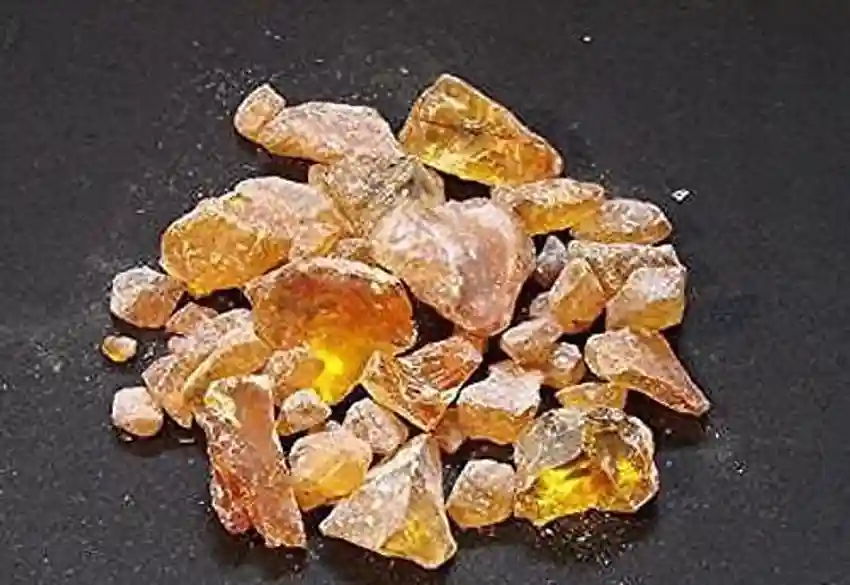
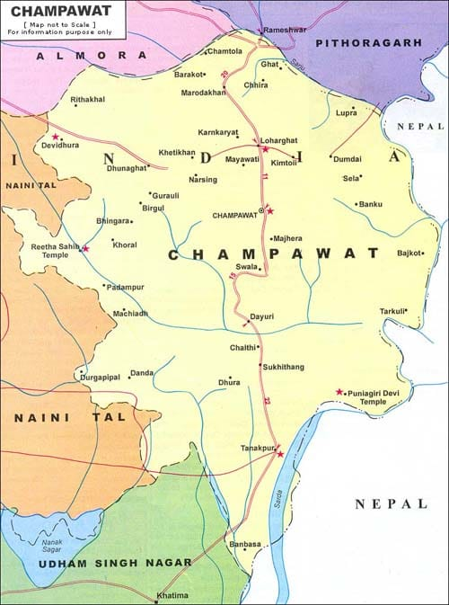

Champawat is abundant in pine forests, making it a prime location for the extraction and processing of pine resin. Pine resin is a natural secretion from pine trees, used in manufacturing turpentine, rosin, varnishes, soaps, and even medicinal products. These eco-friendly, biodegradable products are harvested sustainably using traditional tapping methods. Resin-based products are highly valued in both domestic and industrial applications, contributing to local livelihoods and forest-based industries.
The history of pine resin tapping in Champawat dates back decades and is deeply integrated with forest-based communities. The pine trees of the Kumaon region produce high-quality resin due to the climate and soil composition. It is considered one of the most sustainable forest products, as trees remain unharmed if proper tapping techniques are used. The local Forest Development Corporation also promotes resin-based economic activities, providing employment and sustainable income sources.
For information or to place orders, contact the Champawat Resin Cooperative.
You may also visit their showroom or order online at

- Pine resin was used in ancient Indian rituals and traditional medicines.
- Resin extraction is one of the oldest forest-based economic activities in the region.
- Products like turpentine and rosin are made locally and exported outside Uttarakhand.
- The process of harvesting resin is completely manual and relies on skilled forest workers.